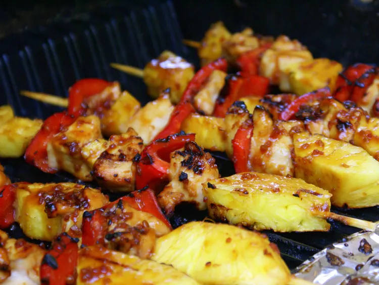

Back to Home
Chicken Kabobs

Description
These chicken kabobs don't take long on the grill and no marinating is required! The skewers are simply basted with BBQ sauce while they cook on the grill.
Ingredients
- cooking spray
- 4 skinless, boneless chicken breast halves - cubed
- 1 large green bell pepper, cut into 2 inch pieces
- 1 onion, cut into wedges
- 1 large red bell pepper, cut into 2-inch pieces
- skewers
- 1 cup barbeque sauce
Steps
-
Step 1
Preheat an outdoor grill for high heat and lightly oil the grate.
-
Step 2
Thread chicken, green bell pepper, onion, and red bell pepper pieces onto skewers alternately.
-
Step 3
Cook skewers on the preheated grill, turning and brushing frequently with barbeque sauce, until chicken is no longer pink in the center and the juices run clear, about 15 minutes. An instant-read thermometer inserted into the center should read at least 165 degrees F (74 degrees C).